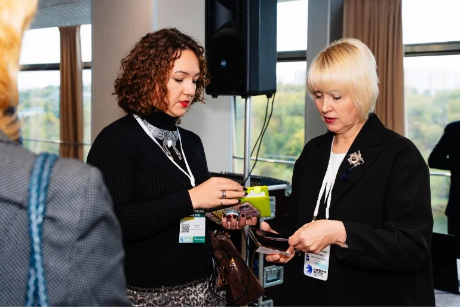
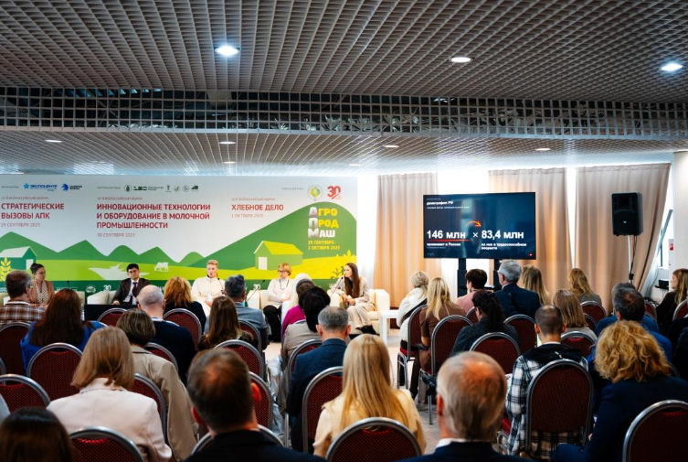
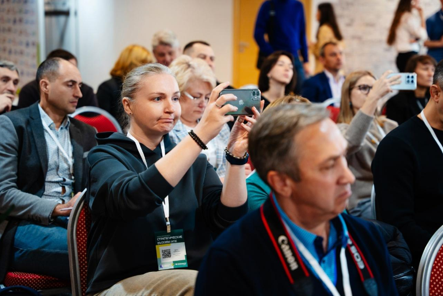
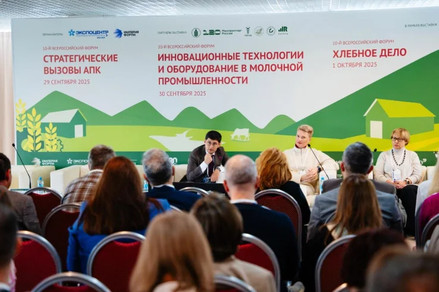
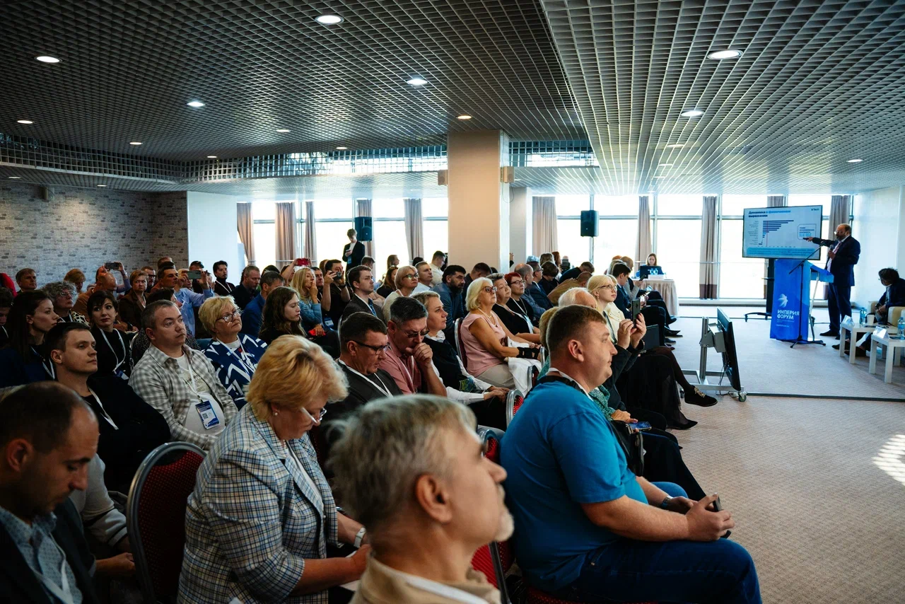
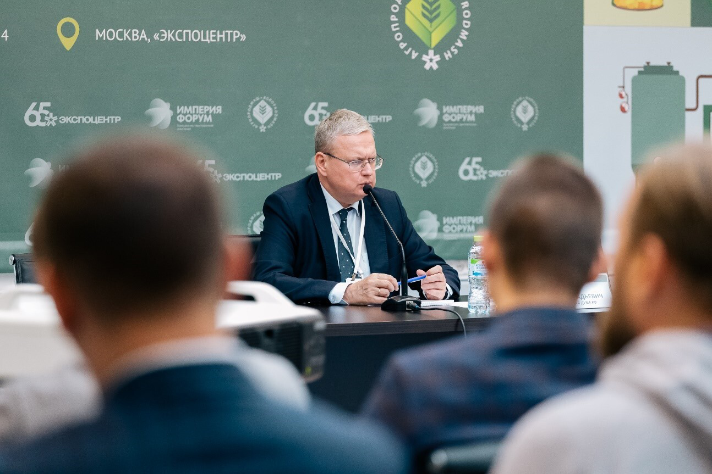

11-й Всероссийский форум
Стратегические вызовы АПК: Готовая Еда
Разберём спрос, технологии и практические стратегии для рынка готовой еды, который стремительно превращается в отдельную экономику внутри пищевой отрасли.
Почему сейчас
Готовая еда стремительно превращается в отдельную экономику внутри пищевой отрасли.
Покупатель желает быстроты, удобства и предсказуемости; сети, HoReCa, доставка и корпоративное питание стараются этот запрос удовлетворить. Ведущие аналитические компании утверждают: спроса хватит, чтобы обеспечить этому направлению рост на годы вперёд.
Задача Форума - помочь производителям оборудования понять потребности рынка, выработать сбалансированную стратегию развития и выстроить устойчивую бизнес-модель. А производителям FMCG - выбрать надёжных, современных и технологичных поставщиков, которые станут долгосрочными партнёрами.
Выгоды от участия
Четыре причины быть в зале
Инсайды из первых рук
Аналитика рынка, ниши роста, маржинальность и портрет покупателя от экспертов FMCG, ритейла и отраслевых ассоциаций.
Технологии на практике
Оборудование, заморозка, упаковка, автоматизация, ИИ и санитарный дизайн в привязке к реальной экономике производства.
Нетворкинг с рынком
Производители, фабрики-кухни, dark kitchen, ритейл, HoReCa, поставщики решений и технологические специалисты в одном пространстве.
Диалог о правилах игры
ХАССП, маркировка, прослеживаемость, безопасность, требования ритейла и ответственность производителя без бюрократического тумана.
Кому подойдет мероприятие
Для управленцев и специалистов, которые отвечают за рост, качество и экономику готовой еды
Собственники бизнеса, генеральные директора, коммерческие директора, главные технологи, директора фабрик-кухонь, руководители производств, закупщики ритейла, категорийные менеджеры, HoReCa и кейтеринг, dark kitchen, R&D и качество, поставщики оборудования.
Атмосфера
Масштаб отрасли в одном пространстве








Деловая программа
Три сессии о спросе, технологиях и практиках рынка готовой еды
Проект программы. Состав участников и отдельные темы могут быть уточнены программным комитетом.
* - готов к употреблению, готов к приготовлению, набор для еды
12:00-13:30
90 минут
Аналитическая сессия
READY-TO-EAT по-русски: где спрос, почему он растёт и где остаются свободные ниши
Основа любого планирования, даже краткосрочного - информация. Полная и достоверная. Поэтому в первой сессии Форума примут участие эксперты ведущих аналитических агентств и представители смежных отраслей экономики. Они нарисуют максимально полную и выпуклую картину происходящего в секторе готовой еды, опишут устойчивые тенденции и обратят внимание на моменты, которые обычно остаются незамеченными.
- Предпосылки спроса на готовую еду - почему он растёт, когда рынок падает
- Куда смещается потребление: магазины у дома, доставка или кейтеринг
- Завтрак, обед, ужин, перекус - какие форматы позволяют легче войти в категорию
- Мясо, птица, овощи, молоко, крупы или рыба - ТОП категорий, которые легче всего перевести в готовый формат
- Российская специфика рынка: что нельзя копировать у Азии и Европы без адаптации
- Ready-to-eat, ready-to-cook, meal-kit*, полуфабрикаты высокой готовности - где ниже риск и выше шанс масштабирования
- Прогноз на 3-5 лет: какие форматы станут нормой, а какие останутся экспериментом
Приглашённые спикеры:
Аналитические и консалтинговые агентства, представители смежных отраслей экономики.
14:00 - 15:30
90 минут
Технологический брифинг
Фабрика готовой еды - через технологии к добавленной стоимости
Рынок готовой еды предъявляет к производству принципиально новые требования: высокая скорость выпуска, стабильность качества, минимизация ручного труда, продление срока годности и снижение потерь. Сессия посвящена современным технологиям и оборудованию для выпуска готовых блюд, полуфабрикатов и meal-kit-продукции. Особое внимание будет уделено автоматизации, санитарному дизайну, холодовой цепи и решениям, позволяющим производителю удерживать рентабельность даже в условиях непрерывно растущих издержек.
- Выбираем оборудование под готовую еду: не «самое современное», а наиболее подходящее
- Нарезка, смешивание, термообработка, фасовка, охлаждение - где теряется качество и производительность
- Санитарный дизайн цеха: как строить производство, которое выдержит проверку и ежедневную нагрузку
- Автоматизация против кадрового дефицита - какие операции стоит механизировать первыми
- Цифровой контроль характеристик: как отслеживать партию и получать обратную связь не от недовольных клиентов
Приглашённые спикеры:
Ведущие инженеры и технологи, эксперты по автоматизации и роботизации, ИТ-разработчики, поставщики оборудования, производители ингредиентов.
16:00 - 17:15
75 минут
Экспертный совет
Эксперименты, прозрачность и безопасность: разбор лучших практических решений и поиск неочевидных стратегий развития
Даже качественный и технологичный товар не гарантирует коммерческого успеха. К созданию продукта необходимо подходить творчески, а потенциально сверхприбыльные решения могут скрываться там, куда никто не догадывается взглянуть. Кроме того, в продукции ready-to-eat ошибка может стоить бизнеса: срок годности короче, требования к безопасности жёстче, а законодательство активно меняется. Сессия поможет тем, кто хочет грамотно оценить риски, безопасно выйти со своей продукцией в сети, HoReCa и доставку и сделать свой проект одним из образцов успеха.
- Вывод на рынок новых блюд - прихоть или необходимость
- Экзотика vs традиции - что лучше продаётся и почему
- Тёмные и распределённые кухни, контрактное производство: ищем подводные камни
- Маркировка, состав, пищевая ценность, аллергены: требования к производству готовой еды, которые чаще всего недооценивают
- Как отследить партию товара и быстро понять, где возникла проблема, а главное - кого она затронула
- Ответственность за качество: как договором распределить риски между производителем, каналом и логистикой
- Сложности работы с нестандартными компонентами - наглядные примеры: что получилось, где возникали сложности и какие потребовались вложения
Приглашённые спикеры:
Технологи и владельцы действующих производств, регуляторные эксперты, логистические компании.
О выставке:
«Агропродмаш-2026» – международная выставка оборудования, технологий, сырья и ингредиентов для пищевой и перерабатывающей промышленности.
Преимущество и уникальность выставки заключается в том, что экспозиция демонстрирует оборудование и технологии для всей цепочки: от производства сырья и ингредиентов до выпуска готового продукта, его упаковки, контроля качества, охлаждения, хранения и логистических решений.
Перейти на сайт выставки
Оборудование
IQF и шоковая заморозка
MAP-упаковка
Функциональные ингредиенты
Автоматизация линий
Маркировка и контроль
Бесплатная регистрация
ЗАРЕГИСТРИРУЙТЕСЬ
НА ФОРУМ
Оставьте данные, и команда организаторов отправит подтверждение участия на email. Участие бесплатное по предварительной регистрации.
28 сентября 2026
Москва, Крокус Экспо, Павильон 3
11-й Всероссийский форум «Стратегические вызовы АПК: Готовая Еда»
Организаторы
Команды, которые собирают выставку и деловую программу
Организатор выставки «Агропродмаш-2026»
АО «Экспоцентр» – всемирно известная российская выставочная компания, неизменно сохраняющая статус ведущего организатора крупнейших в России, СНГ и Восточной Европе международных отраслевых выставок, более чем с 60-летним опытом работы.
Организатор форума «Стратегические вызовы АПК: готовая еда»
Конгрессно-Выставочная Компания «ИМПЕРИЯ ФОРУМ» – организатор деловых мероприятий на агропромышленном рынке, в том числе одного из ключевых отраслевых Форумов «Стратегические вызовы АПК: инвестиции, цифровые технологии, повышение эффективности», и один из ключевых партнеров АО «ЭКСПОЦЕНТР» по организации деловой программы крупнейшей отраслевой выставки «Агропродмаш».
Программный комитет
Хотите выступить с экспертной сессией?
Комитет программы открыт к предложениям от производителей, технологов, регуляторов и компаний, которые готовы показать работающую практику рынка.